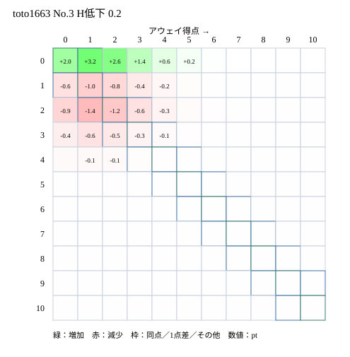
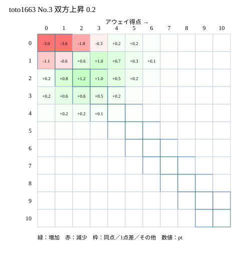
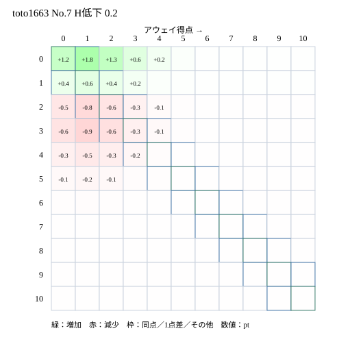
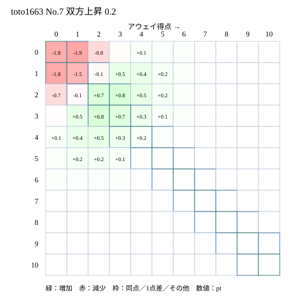
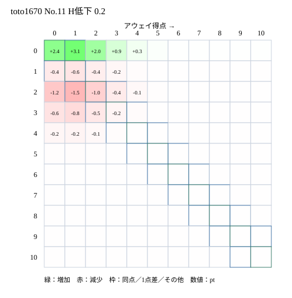
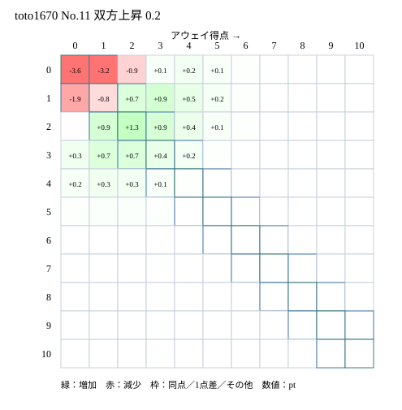
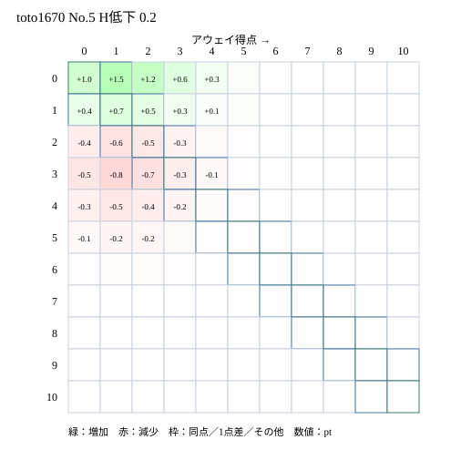
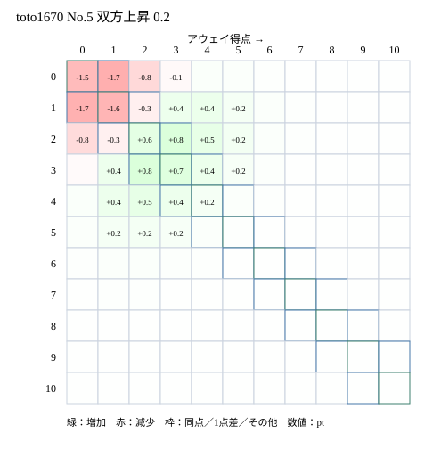
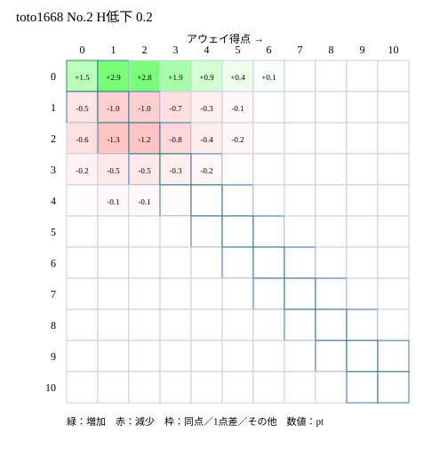
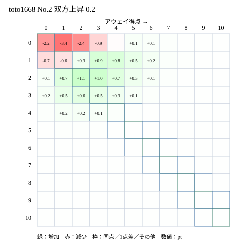

試合前保存λの78試合に対し、8方向×0.1/0.2点と基準を計算。行列はPhase 1・2と同じ独立Poisson・0～10点正規化。全1,326行、1点差隣接26,520行。実際の予測誤差幅やスコア遷移確率ではない。不確実性mixは適用せず参考列に保存。試合結果・配券は使用していない。
| scenario | mean_delta_draw | min_delta_draw | max_delta_draw | mean_delta_00 | mean_delta_11 | mean_delta_2plus_draw | mean_delta_margin1 | mean_delta_margin2plus |
|---|---|---|---|---|---|---|---|---|
| A上昇 | -0.00552 | -0.01185 | 0.00325 | -0.00679 | -0.00294 | 0.00420 | -0.00396 | 0.00948 |
| A低下 | 0.00515 | -0.00412 | 0.01221 | 0.00750 | 0.00226 | -0.00461 | 0.00314 | -0.00829 |
| H上昇 | -0.00572 | -0.01161 | 0.00428 | -0.00679 | -0.00296 | 0.00403 | -0.00419 | 0.00991 |
| H上昇・A低下 | -0.00165 | -0.01451 | 0.01495 | 0.00000 | -0.00074 | -0.00091 | -0.00179 | 0.00344 |
| H低下 | 0.00535 | -0.00525 | 0.01181 | 0.00750 | 0.00229 | -0.00444 | 0.00339 | -0.00874 |
| H低下・A上昇 | -0.00126 | -0.01674 | 0.01268 | 0.00000 | -0.00069 | -0.00057 | -0.00131 | 0.00256 |
| 双方上昇 | -0.01022 | -0.01403 | -0.00589 | -0.01293 | -0.00584 | 0.00855 | -0.00741 | 0.01763 |
| 双方低下 | 0.01167 | 0.00662 | 0.01641 | 0.01579 | 0.00458 | -0.00870 | 0.00725 | -0.01892 |
同点確率の増減は0-0、1-1、2-2以上のセル差分の合計。H/A別の1・2・3点以上差は全シナリオCSVに保持。確率質量の増減は、個々の試合が勝敗から同点へ移る確率ではない。
| home_team | away_team | scenario | P_draw | delta_P_draw | delta_P_0_0 | delta_P_1_1 | delta_P_draw_2plus | delta_P_margin_1 | delta_P_margin_2plus |
|---|---|---|---|---|---|---|---|---|---|
| λH=0.8 | λA=0.8 | H低下 | 0.37995 | 0.02663 | 0.04470 | -0.01085 | -0.00722 | -0.00305 | -0.02359 |
| λH=0.8 | λA=0.8 | A低下 | 0.37995 | 0.02663 | 0.04470 | -0.01085 | -0.00722 | -0.00305 | -0.02359 |
| λH=0.8 | λA=0.8 | 双方低下 | 0.41978 | 0.06647 | 0.09930 | -0.02078 | -0.01205 | -0.00753 | -0.05894 |
| λH=0.8 | λA=0.8 | 双方上昇 | 0.30851 | -0.04481 | -0.06656 | 0.00612 | 0.01563 | -0.00750 | 0.05231 |
| λH=1.5 | λA=1.5 | H低下 | 0.25137 | 0.00837 | 0.01102 | 0.00656 | -0.00921 | 0.00626 | -0.01463 |
| λH=1.5 | λA=1.5 | A低下 | 0.25137 | 0.00837 | 0.01102 | 0.00656 | -0.00921 | 0.00626 | -0.01463 |
| λH=1.5 | λA=1.5 | 双方低下 | 0.26391 | 0.02091 | 0.02449 | 0.01350 | -0.01707 | 0.01565 | -0.03656 |
| λH=1.5 | λA=1.5 | 双方上昇 | 0.22643 | -0.01657 | -0.01641 | -0.01557 | 0.01542 | -0.01519 | 0.03176 |
| λH=2.5 | λA=2.5 | H低下 | 0.18691 | 0.00335 | 0.00149 | 0.00521 | -0.00335 | 0.00441 | -0.00776 |
| λH=2.5 | λA=2.5 | A低下 | 0.18691 | 0.00335 | 0.00149 | 0.00521 | -0.00335 | 0.00441 | -0.00776 |
| λH=2.5 | λA=2.5 | 双方低下 | 0.19193 | 0.00836 | 0.00331 | 0.01106 | -0.00601 | 0.01103 | -0.01940 |
| λH=2.5 | λA=2.5 | 双方上昇 | 0.17623 | -0.00733 | -0.00222 | -0.00918 | 0.00407 | -0.01010 | 0.01744 |
| λH=2.0 | λA=0.8 | H低下 | 0.22648 | 0.02180 | 0.01346 | 0.00966 | -0.00132 | 0.02177 | -0.04356 |
| λH=2.0 | λA=0.8 | A低下 | 0.19399 | -0.01070 | 0.01346 | -0.00817 | -0.01599 | -0.01345 | 0.02414 |
| λH=2.0 | λA=0.8 | 双方低下 | 0.21855 | 0.01386 | 0.02991 | 0.00068 | -0.01672 | 0.01041 | -0.02427 |
| λH=2.0 | λA=0.8 | 双方上昇 | 0.19363 | -0.01105 | -0.02005 | -0.00762 | 0.01662 | -0.01073 | 0.02178 |
| λH=1.5 | λA=1.0 | H低下 | 0.27960 | 0.01975 | 0.01817 | 0.00721 | -0.00563 | 0.01393 | -0.03368 |
| λH=1.5 | λA=1.0 | A低下 | 0.26185 | 0.00201 | 0.01817 | -0.00282 | -0.01335 | -0.00322 | 0.00122 |
| λH=1.5 | λA=1.0 | 双方低下 | 0.28701 | 0.02716 | 0.04037 | 0.00423 | -0.01744 | 0.01339 | -0.04055 |
| λH=1.5 | λA=1.0 | 双方上昇 | 0.23929 | -0.02056 | -0.02706 | -0.01088 | 0.01738 | -0.01469 | 0.03525 |
第1663回の東京V－FC東京と水戸－浦和を同条件で比較。ほかの近接ペアも結果を使わず列挙した。行列P(D)差0.5ポイント以内の全514組のうち、Hのλを0.1下げた場合にD増減の符号が逆になる組は14組、反応差の最大は1.536ポイント。ペアは互いに独立の標本ではない。感応度の符号と大きさはλのどちらを動かすかで変わるため、「Dになりやすい」という単一順位にはしない。
| match_A | match_B | raw_P_D_A | raw_P_D_B | gap_P_00 | delta_draw_H_low_A | delta_draw_H_low_B |
|---|---|---|---|---|---|---|
| 東京V－ＦＣ東京 | 水戸－浦和 | 0.24743 | 0.24646 | 0.03655 | -0.00185 | 0.00435 |
緑が確率質量の増加、赤が減少。枠で同点・1点差・その他を分けた。各セルは変動後−基準のポイント値。隣接する同点の確率を重複合算しない。










同点帯別、H/A別の1点差・2点差以上、隣接勝敗セルと各同点セルの差分を独立に保存した。隣接表の同点セルは勝敗セルごとの参照値であり、行方向に足し上げる評価量ではない。基準構造とシナリオ構造は構造表でPhase 4へ渡せる。Phase 4は未実装。